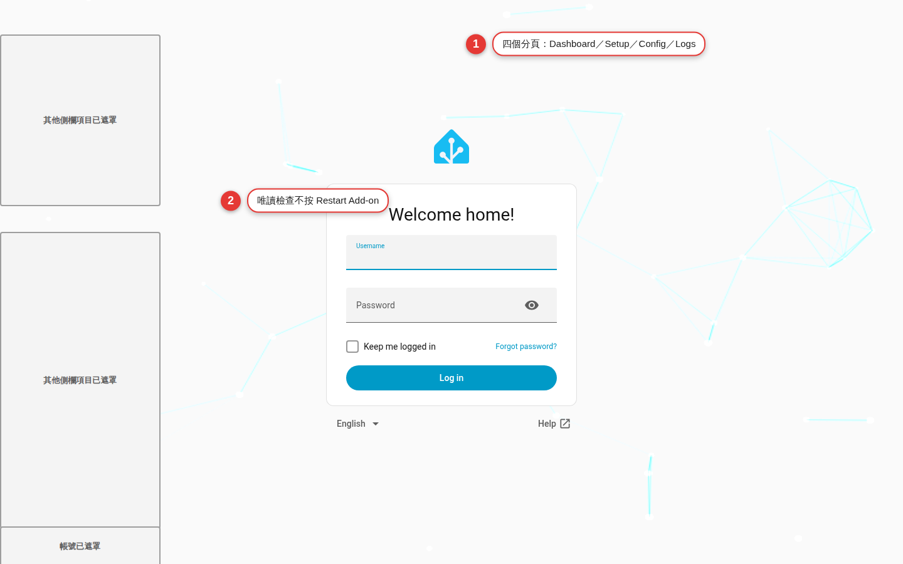

Open the Web GUI for the first time
Go into the admin interface through Home Assistant Ingress and work out what Dashboard, Setup, Config and Logs are each responsible for. This time you only browse and read status. You press no Restart, no Save, no Save & Restart, no authorization and no other control that changes the system.
Learn your way around before you touch a button that changes settings
The Cloudflared Web GUI gathers information that used to be scattered across the add-on options and the log into four pages. That makes it easier to read, but it also puts "Save" and "Restart" within easy reach: if you keep clicking before you understand what each page is responsible for, you can write to Supervisor options, restart the add-on, and then create or change a tunnel and DNS.
Ingress is the admin entrance, not a public remote URL
When you choose Open Web UI on the add-on detail page, Home Assistant uses Ingress to show the Web GUI inside the interface you are already signed in to. The project's internal Web GUI service uses 8099, but the add-on config does not ask you to map that port to the outside; your Home Assistant sign-in is the first door into this admin page.
| The URL or entrance you see | What it is for | Should it be exposed separately |
|---|---|---|
| Open Web UI on the add-on detail page | Opens the admin interface through Ingress | No; keep using it behind the Home Assistant sign-in |
| Cloudflared in the sidebar | A shortcut to the same Ingress admin interface | No |
ha.example.com | The remote hostname you plan to give Home Assistant later | Only create it once the security settings are done |
| The Cloudflare authorization URL | A short-lived entrance for the first authorization in the locally managed mode | Never make it public, repost it or put it in a tutorial screenshot |
Seven steps for a first read-only tour
Start from the add-on detail page
Go to Apps under "Settings" and open the Cloudflared Web GUI detail page. Confirm that the add-on is started, then choose Open Web UI. If you turned on the sidebar entry in Chapter 2, you can use the Cloudflared shortcut instead.
Confirm you are still inside Home Assistant
The page should open behind the Home Assistant sign-in, not ask you to connect to an internal port directly. Check that the Home Assistant navigation is still on the left and that it names the host you are on, so you do not mistake another host's interface for this one.
Look at the Dashboard first, and do not press Restart
Identify the three kinds of status card, Tunnel, Mode and Add-on, and the Restart Add-on button. With empty options the page may say that nothing is configured yet and that Tunnel is stopped; that is the expected state on a first tour, not a prompt to restart right away.
Switch to Setup and only read the step status
Setup tracks the configuration, the Cloudflare authorization, the tunnel creation and the connection. With a blank configuration it usually stops at the first step and points you to Config. If an authorization URL appears unexpectedly, do not click, copy or share it; first check whether this host is already configured.
Switch to Config and do not touch the form
Confirm that the page loads the Supervisor options, and find where Save, Save & Restart and Reset are. Do not type in a field, flip a toggle or remove a token; in this chapter you do not even change the unsaved form. Read it, then leave.
Switch to Logs and only watch the live status
Logs shows the same content as the Home Assistant add-on Log tab: Connected / Disconnected, the filter field and the log area. Do not download or publish the full log; to identify the page it is enough to see that the stream is connected, or Waiting for logs.
Go back to the Dashboard and leave
Check once more that there is no restart in progress, that no hostname was added and that you never entered the Cloudflare authorization page. Close the Web GUI tab or go back to the Home Assistant home page; you do not need to sign out of Home Assistant, and you do not need to stop the add-on.

What question each of the four pages answers
| Page | What it answers | What you can see | This chapter's hard stop |
|---|---|---|---|
| Dashboard | What is happening with the add-on and the tunnel right now? | Tunnel status, edge connections, mode, the add-on and Supervisor connection, versions | Do not press Restart Add-on |
| Setup | How far has the first-time setup got? | Progress on configuration, authorization, tunnel creation and the connection; it shows the authorization URL when one is needed | Do not open the authorization URL and do not copy the link |
| Config | What are the Supervisor options right now? | The token, the hostname, additional hosts, catch-all and the advanced options | Do not change a field and do not press Save or Save & Restart |
| Logs | What are the add-on and cloudflared reporting? | The same live stream as the HA Log tab, plus filter, clear the view and download | Do not publish or casually download the full content |
Spot everything that changes the system or leaks data
| Control or data | Real impact | Safe practice |
|---|---|---|
| Dashboard: Restart Add-on | Runs the tunnel setup again, so the tunnel and the GUI drop briefly; it uses the settings already saved | Do not press it in this chapter; before a real restart, confirm your maintenance window |
| Config: Save | Writes the form to Supervisor options, but a restart is still needed to apply it | It is not a draft feature; use it only once you have checked every field |
| Config: Save & Restart | Writes to Supervisor options and then restarts the add-on | Treat it as a real change; back up and check the impact first |
| Setup: the authorization URL | Takes the browser into the Cloudflare zone authorization flow | Open it yourself on a trusted device only; do not share it and do not screenshot it |
Config: tunnel_token | The sensitive credential for a remotely managed tunnel | Even when the screen redacts it, never copy it into a chat or an issue report |
| Logs: display and download | May contain a hostname, a tunnel ID, an IP, an authorization URL and error context | Cut it down to the smallest excerpt and redact it before you ask someone you trust for help |
Acceptance tests for your first open
Ingress opens normally
You can reach the Web GUI from the add-on detail page or from the sidebar, the Home Assistant sign-in protects the whole path, and no direct public connection was made to the internal 8099.
You can tell the four pages apart
You can say that Dashboard shows status, Setup shows first-time progress, Config shows the Supervisor options and Logs shows the live log, and that switching between them never took you out of the add-on's Ingress.
The blank state makes sense
If you left the options blank in Chapter 2, it is acceptable for Dashboard and Setup to show not configured, or Tunnel stopped; what matters this time is that the Web GUI opens, so do not mistake "not connected yet" for a failed install.
Nothing was written to Config
external_hostnameis still empty,additional_hostsstill has no entries, andtunnel_tokenwas neither set nor removed; you pressed no Save, no Save & Restart and no Reset.The add-on was not restarted
You did not press Restart Add-on on the Dashboard, and nothing you did in this chapter made the page drop out briefly or run setup again.
No sensitive content left your trusted environment
You did not download, repost or screenshot the full Logs, and you shared no authorization URL, token, hostname, tunnel ID, account or IP.
Common first-open pitfalls
Open Web UI is grayed out or missing
Go back to the add-on detail page, confirm that the install finished and that the add-on is started, then refresh Home Assistant. If the status keeps falling back to stopped, read the latest error in the add-on Log; do not switch to a public 8099 as a workaround.
It opens to a blank page or keeps loading
Wait a short while, then open it again from the add-on detail page and confirm that your Home Assistant session is still valid. You can try refreshing the browser, but do not press Restart Add-on or Save & Restart while you are troubleshooting.
The Dashboard shows Tunnel stopped
If the options are completely empty, this is the first-time setup state the project deliberately keeps the Web GUI in. Go to Setup, confirm that it says not configured, and leave it there; do not fill the fields with a made-up hostname.
The Dashboard shows Supervisor unreachable
Refresh first and confirm that the add-on itself is still running. If it keeps showing, read the Home Assistant add-on Log and the system status, and note the add-on version and the redacted error; do not change the tunnel options just to clear this message.
Logs shows Disconnected or Waiting for logs
A brief disconnect does not necessarily mean the tunnel is broken; confirm that the add-on is not currently starting or stopping, then wait and see whether the stream comes back. If you need to, use Connect on the page to reattach the log stream, which is not the same as restarting the add-on.
The page already shows an unfamiliar hostname, token configured, or an authorization URL
Stop immediately: do not click the link, copy anything, clear the token or save. It means the system may not be in the blank state you expected; check with whoever administers it what it is already used for, and keep the sensitive screens inside your trusted environment.
You changed a field by accident on Config
As long as you have not pressed Save or Save & Restart, leave the page and come back so the saved options load again. Do not press Save to "put it back"; that is still one write to Supervisor options.
First open FAQ
The Dashboard shows stopped. Does that mean the add-on is broken?
Are Open Web UI and Cloudflared in the sidebar different interfaces?
If I only press Save and not Restart, does that count as a change?
What is the difference between Restart Add-on on the Dashboard and Save & Restart?
Does Filter on Logs delete the lines that do not match?
Can I send the authorization URL to my phone and open it there?
Official sources and version notes
| Source | What this chapter verifies |
|---|---|
| WoowTech README: What you get | What Dashboard, Setup, Config and Logs are for, and how they sync with the Supervisor options |
| Cloudflared Web GUI add-on docs | Open Web UI and the sidebar Ingress, the blank-configuration behavior, Save & Restart and what the four pages do |
| Web GUI source code | The current navigation names, the Dashboard restart prompt, how Config saves and the Logs controls |
| Home Assistant Developer: add-on Ingress | The official mechanism by which add-ons serve a web interface through the Home Assistant front end |
| Cloudflare Tunnel official docs | Where the connector and the tunnel stop, so you do not mistake the Ingress admin page for a public hostname |